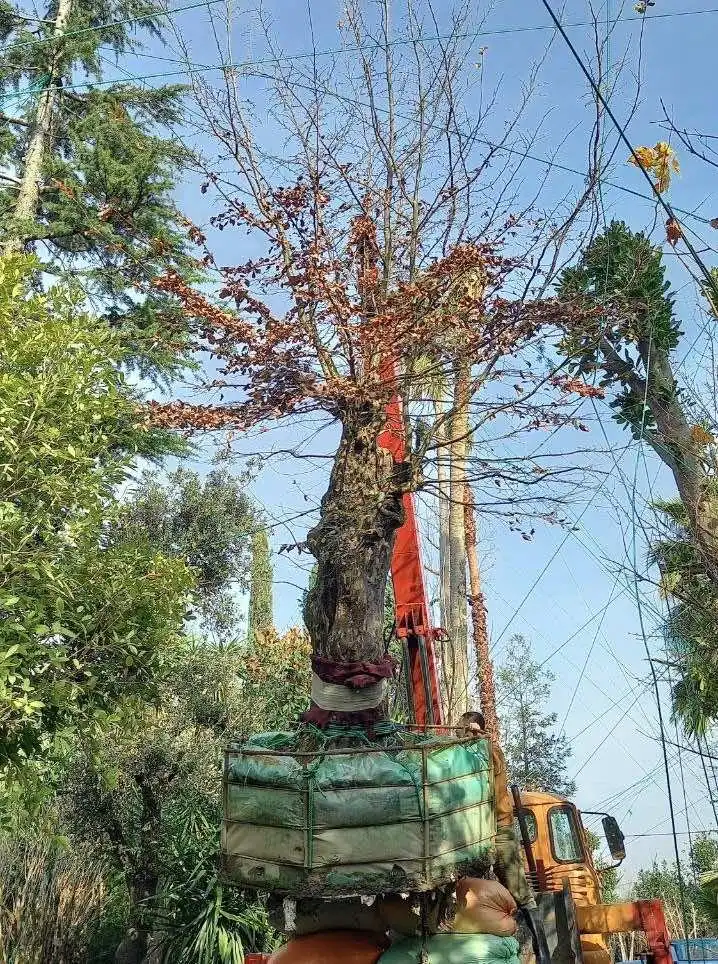
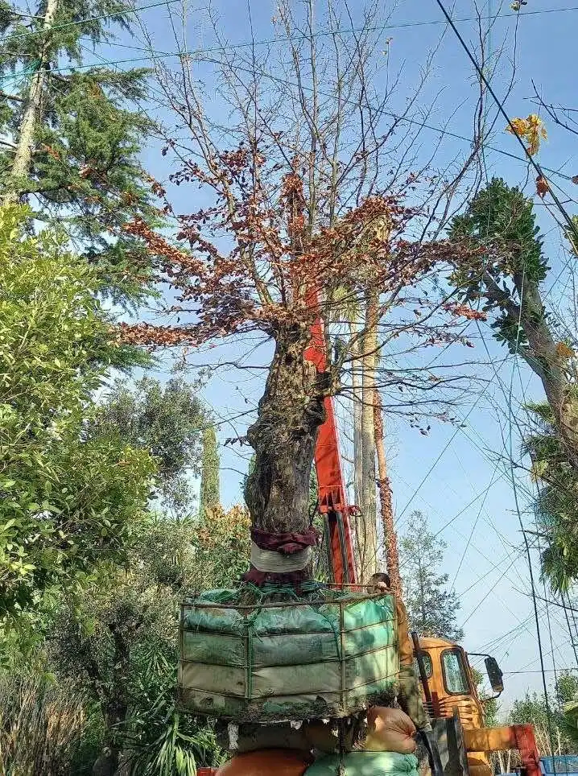

درباره ما
امروزه به دلیل ساخت و سازها و گسترش شهرها، درختان در معرض تخریب و نابودی قرار گرفته اند. توجه به اهمیت این موضوع که درختان نقش بسیارمهمی در حفظ طبیعت و زندگی انسانها دارند، موجب شد تا مجموعهی پالم پردیس تحقیقات خود را جهت نجات درختانی که در مسیر ساخت و ساز ها، حریم جاده ها اتوبان ها، درختانی که بواسطه تغییر نوع کشت ( شامل درختان مثمر و غیر مثمر) یا تغییر کاربری و تقسیم ارث در باغات در معرض نابودی قرار میگیرند را شروع نماید.


 
